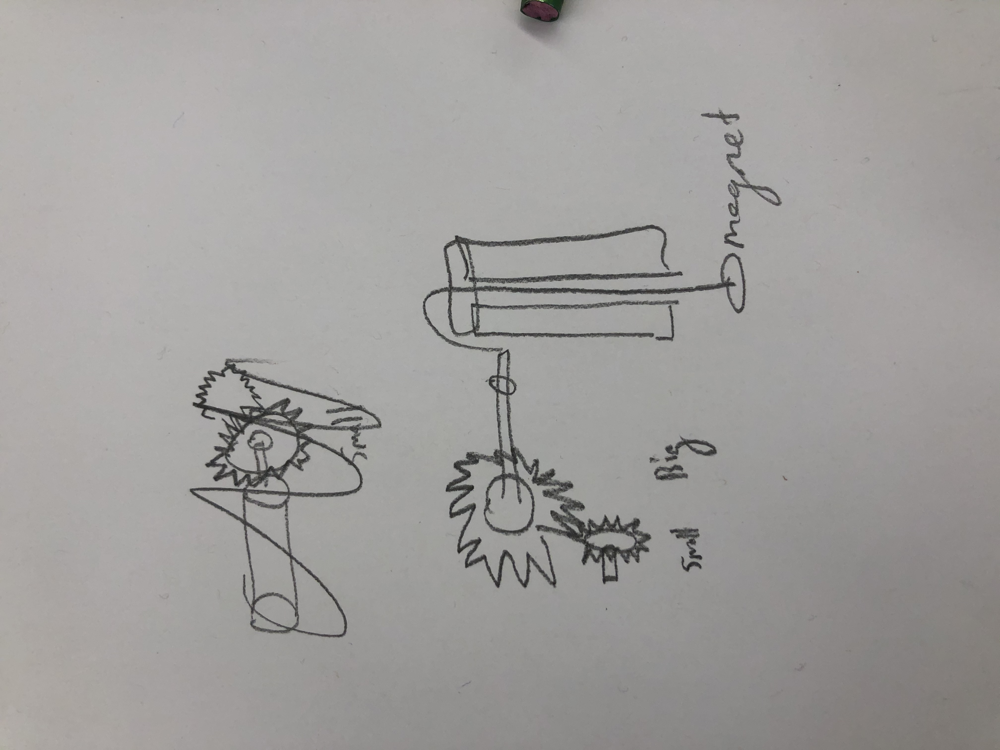

Here is an image:
This week our goal was to make a kinetic structure. I decided to make a crane. I designed my crane to have to gears that are connected and the first is driven by a hand crank. The second gear is attached to a screw that turns a screw and has a string attached to it. There is a simple rod attached to the top over which the rope pulls from. I was going to put a magnet on it, but could not find one in time.
I made the gears using a 3D printer and plywood, which was pretty functional and cool to make gears. I inserted a part from some random company which was super useful and helpful. I just made a sketch of one face of the gear and actually deleted the rest. I used the drill press to make holes in the board and the wood cutting thingy with a wire that moves fast. Lots of fun. Need to remember to keep goggles on. Don't want to be yelled at by Victoria again.
I first tried to use a motor but the gears worked at the beginning, but the rotating part of the motor wore away at the center hole and thus the gears didn't spin. I decided to add a hand crank due to this. I also struggled with keeping the screw firmly attached to the board, while still being able to spin, and was able to fix this by adding nuts on both sides of the screw. The weight is also not that heavy so when one winds it back down, the rope kind of sticks and doesn't fall immediately